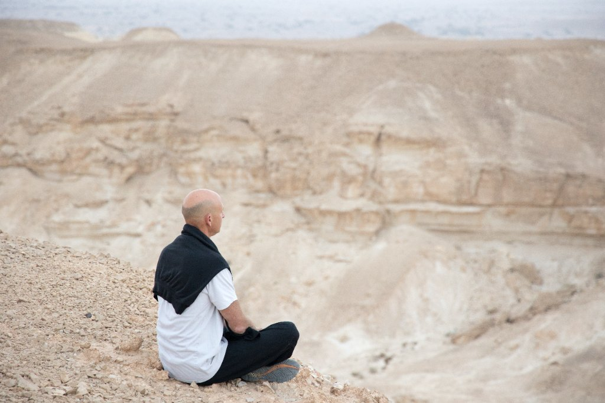
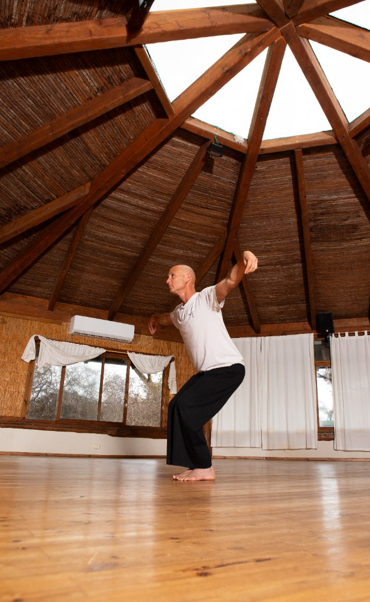

תומר בן דוד
מלווה אנשים וארגונים דרך תנועה, גוף ונפש
תומר בן דוד משלב מעל 40 שנות תרגול בקונג פו, צ'י קונג ומדיטציה עם ניסיון בעבודה אישית, טיפולית וארגונית. דרך הגוף, התנועה והתרגול, תומר מלווה אנשים וארגונים בתהליכים של חיזוק, שינוי וצמיחה.

במה נפגש?
לאנשים פרטיים ולארגונים יש דרכים שונות לעבוד ולהיות בקשר — בחרו את הדרך שלכם.
עלי

שמי תומר בן דוד.
את דרכי בעולם הגוף והתנועה התחלתי בשנת 1982, ומאז הקונג פו הוא חלק בלתי נפרד מחיי.
אני מורה לקונג פו הונג גאר משנת 2001. אני תלמידו של אודי רענן, ולמדתי והתאמנתי בהונג קונג אצל סיפו צ'אן יי קאנג, ראש שיטת הונג גאר העולמית.
לאחר שירותי הצבאי כקצין בסיירת צנחנים יצאתי למסע שהוביל אותי להונג קונג, שם העמקתי באימון המסורתי והתחלתי ללמד ולהעביר את הדרך הלאה.
לאורך השנים שילבתי בין אומנויות לחימה, עבודה טיפולית, הנחיית קבוצות ועבודה עם אנשים וארגונים.
אני מאמין שכוח אמיתי נבנה דרך התמדה, כוונה ותרגול. הדרך שבה אנו מתרגלים היא הדרך שבה אנו חיים.
עם שובי לישראל הקמתי את חברת אורין קיסריה, העוסקת בהפקת אירועים, חוויות ופיתוח צוותים לארגונים בארץ ובעולם.
אני ממייסדי הפגודה בשדות ים — מרחב לתנועה, גוף ונפש.
אני ממייסדי לבונה — מרחב טבע בלב הערבה המיועד לריטריטים, מפגשים ותהליכים.
בנוסף אני חבר בצוות עמותת כפר איזון ומנחה קבוצות ותהליכים טיפוליים.
לאורך הדרך אני ממשיך ללמד, להנחות וללוות אנשים וארגונים דרך תנועה, גוף ונפש.
קישורים
- אורין קיסריה — orin.co.il
- הפגודה בשדות ים — ha-pagoda.com
- לבונה — מרחב טבע בלב הערבה (אתר בבנייה)